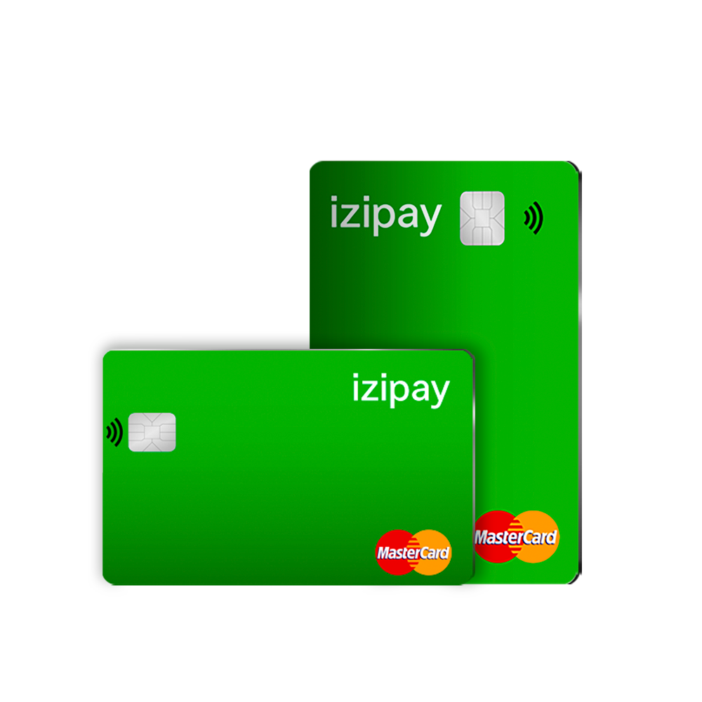

- Globale Nutzung: Bezahlen Sie überall dort, wo VISA/MasterCard akzeptiert wird – lokal oder international.
- Geldautomaten-Abhebungen: Heben Sie Fiat-Währung direkt aus Ihrer Krypto-Wallet an unterstützten Geldautomaten weltweit ab.
- Automatische Umrechnung: Keine Vorab-Umrechnungen erforderlich – Krypto wird automatisch in Fiat umgewandelt, sobald Sie bezahlen oder abheben.
- Langlebig und sicher: Eine hochwertige, sichere physische Karte mit fortschrittlichen Betrugsschutzsystemen.
- Einfache Aufladung: Laden Sie Ihre Karte jederzeit mit Krypto über Ihr IZI Pay-Konto auf.